chooseGCM

The goal of chooseGCM is to help researchers aiming to project Species Distribution Models and Ecological Niche Models to future scenarios by applying a selection routine to the General Circulation Models.
Installation
You can install the development version of chooseGCM from GitHub with:
install.packages("devtools")
devtools::install_github("luizesser/chooseGCM")The package is also available on CRAN. Users are able to install it using the following code:
install.packages("chooseGCM")Tutorial
This is a basic tutorial which shows you how to use the functions in chooseGCM. After installing the package, we need to open it:
Downloading WorldClim 2.1 Data
First, we need to use only one time period. Here we use 2090 so the difference between models is more conspicuous. In the same way we are considering the SSP585, which is the more dramatic pathway. The resolution is the lowest to be quicker. The aim here is to maintain all parameters equal, but General Circulation Models (GCMs). In this way we know that the only source of variation comes from them. Note that if you receive a timeout error you can increase timeout value by running , where 600 is the value in seconds that will be enough to download the data.
worldclim_data(path = "input_data/WorldClim_data_gcms_all", period = "future", variable = "bioc", year = "2090", gcm = "all", ssp = "585", resolution = 10)Importing and Transforming Data
Now let’s import GCMs to R in a list of stacks and name the list with the names of the GCMs.
var_names <- c("bio_1", "bio_12")
s <- import_gcms(system.file("extdata", package = "chooseGCM"), var_names = var_names)In each function, data will be transformed. To do that you will always need to provide at least: (1) the list of stacks, (2) the variables you want to use in analysis and (3) the shapefile of your study area. You don’t need to previously mask and subset your data, once the functions will perform this task internally for you. Note that the results from these functions are highly sensitive to variables and to study area. In this sense, the decision on what variables should be considered and what is the study area must be carefully made considering biological aspects of the studied group.
Straigthforward Approach
There is the option to run each function in separate to better
understand what is happening and to better parameterize each step.
However there is a wrapper to help run everything at once and could be
an alternative to have a broad perspective. compare_gcms()
will return a list with a vector called suggested_gcms and
a Figure called statistics_gcms. We suggest that this
Figure could also be included as it is in supplementary data from
studies using this package.
res <- compare_gcms(s, var_names, study_area, k = 3)
#> Warning: The `<scale>` argument of `guides()` cannot be `FALSE`. Use "none" instead as
#> of ggplot2 3.3.4.
#> ℹ The deprecated feature was likely used in the factoextra package.
#> Please report the issue at <https://github.com/kassambara/factoextra/issues>.
#> This warning is displayed once every 8 hours.
#> Call `lifecycle::last_lifecycle_warnings()` to see where this warning was
#> generated.
res$statistics_gcms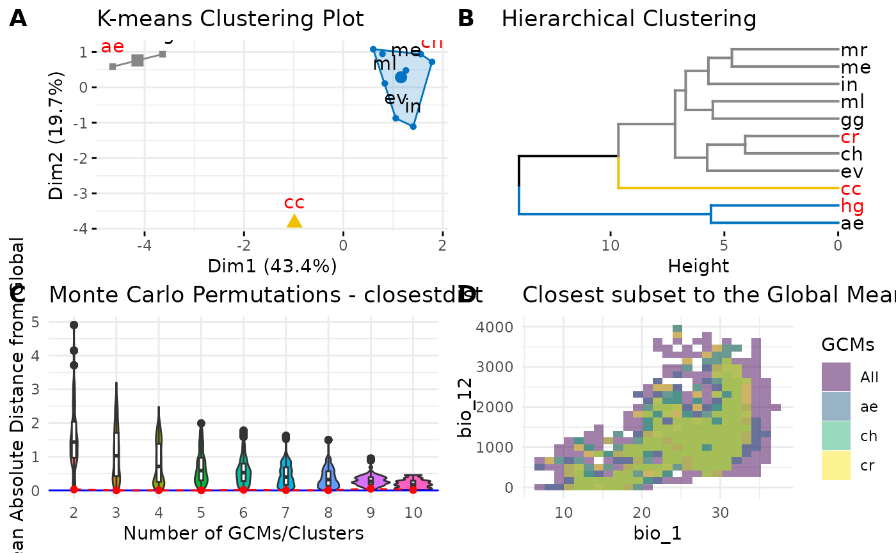
The aim of this function is to inform the minimum required so users
can follow with their workflow in a more straightforward fashion (more
on each plot further). If we see the D plot in the Figure, we can infer
if the selected GCMs reasonably encompass the environmental variety of
all GCMs. The focus should be to cover the core environment and not
outlier regions on the environmental space. In plot C, the Monte Carlo
permutation between GCMs is presented as a violin plot. Plots A and B
are both clusterization methods that can be used to select GCMs.
Clusterization will be adapted to the number of clusters k
designated in the function. Lastly, suggested GCMs were “ae”, “ch” and
“cr”. Those suggestions are the gcms that are closer to the mean
absolute distance from global, thus they better represent the variation
within the environmental space.
Deep-dive Approach
As an alternative for experienced modelers that want to deeply understand the impacts of decisions on GCMs selection, we prepared a set of functions to analyze data more carefully. Each function in the wrapper mentioned above is available to be explored as stand-alone, ranging from exploratory analysis to cluster analysis and methods to determine the optimum number of clusters.
Exploratory Analysis
In chooseGCM we implemented functions to analyze GCMs attributes.
summary_gcms is the only function available that describes
variations within GCMs. It returns the internal information regarding
each variable, as reads: minimum value (min), first quartile
(quantile_0.25), second quartile (median), average (mean), third
quartile (quantile_0.75), maximum value (max), standard deviation (sd),
number of NAs (NAs) and the total number of cells (n_cells). This
function returns a list of GCMs with a table associated with each of
them.
# Summary of GCMs
s_sum <- summary_gcms(s, var_names, study_area)
s_sum
#> $ae
#> min quantile_0.25 median mean quantile_0.75 max
#> bio_1 7.734 24.38925 30.4245 27.59028 32.15975 36.223
#> bio_12 13.387 865.08324 1282.8990 1307.64099 1661.11371 3153.833
#> sd NAs n_cells
#> bio_1 6.555202 0 470
#> bio_12 658.375705 0 470
#>
#> $cc
#> min quantile_0.25 median mean quantile_0.75 max
#> bio_1 9.632 27.3485 32.6475 30.03756 34.59025 37.114
#> bio_12 17.049 748.7095 1239.3800 1324.42981 1842.35349 3718.158
#> sd NAs n_cells
#> bio_1 6.375763 0 470
#> bio_12 736.340840 0 470
#>
#> $ch
#> min quantile_0.25 median mean quantile_0.75 max
#> bio_1 9.519 24.7940 30.745 27.86301 32.00825 33.721
#> bio_12 11.061 953.1217 1582.748 1561.86020 2079.47766 3962.162
#> sd NAs n_cells
#> bio_1 5.813717 0 470
#> bio_12 800.308736 0 470
#>
#> $cr
#> min quantile_0.25 median mean quantile_0.75 max
#> bio_1 8.963 24.57275 30.8235 27.76396 32.3655 34.225
#> bio_12 10.892 940.39249 1437.9115 1431.00430 1853.5811 3904.810
#> sd NAs n_cells
#> bio_1 6.226339 0 470
#> bio_12 717.373064 0 470
#>
#> $ev
#> min quantile_0.25 median mean quantile_0.75 max
#> bio_1 9.135 24.09275 29.9925 27.10791 31.32125 33.478
#> bio_12 8.491 927.21727 1518.8020 1495.06446 1995.87979 3329.857
#> sd NAs n_cells
#> bio_1 5.925051 0 470
#> bio_12 749.026990 0 470
#>
#> $gg
#> min quantile_0.25 median mean quantile_0.75 max
#> bio_1 8.072 23.73725 29.465 26.57517 30.865 32.873
#> bio_12 13.857 983.01001 1629.942 1522.41924 1955.706 3891.572
#> sd NAs n_cells
#> bio_1 5.928956 0 470
#> bio_12 727.476365 0 470
#>
#> $hg
#> min quantile_0.25 median mean quantile_0.75 max
#> bio_1 10.346 26.00875 32.2665 29.63256 34.93375 37.080
#> bio_12 10.447 899.70450 1414.8480 1423.15330 1762.83701 3694.793
#> sd NAs n_cells
#> bio_1 6.74503 0 470
#> bio_12 758.12557 0 470
#>
#> $`in`
#> min quantile_0.25 median mean quantile_0.75 max
#> bio_1 7.136 23.0155 28.138 25.25642 29.269 30.790
#> bio_12 14.053 905.7955 1648.554 1642.04464 2330.816 3754.984
#> sd NAs n_cells
#> bio_1 5.694216 0 470
#> bio_12 872.713168 0 470
#>
#> $me
#> min quantile_0.25 median mean quantile_0.75 max
#> bio_1 6.926 22.8935 28.7935 25.8296 30.1795 32.280
#> bio_12 12.646 924.1427 1524.8660 1549.1119 2004.8098 3736.639
#> sd NAs n_cells
#> bio_1 5.949899 0 470
#> bio_12 848.705135 0 470
#>
#> $ml
#> min quantile_0.25 median mean quantile_0.75 max
#> bio_1 7.324 23.94325 29.1495 26.45857 30.6025 33.174
#> bio_12 8.940 885.25952 1498.8890 1462.32763 1928.1500 3534.142
#> sd NAs n_cells
#> bio_1 5.986042 0 470
#> bio_12 749.279630 0 470
#>
#> $mr
#> min quantile_0.25 median mean quantile_0.75 max
#> bio_1 7.992 23.5035 28.8605 26.03051 30.0505 32.220
#> bio_12 12.032 998.1548 1620.2320 1559.82805 2049.5742 3386.632
#> sd NAs n_cells
#> bio_1 5.666088 0 470
#> bio_12 770.164184 0 470Regarding the exploratory comparison between GCMs, two functions are
available: cor_gcms and dist_gcms. The first
is designed to return a list with a correlation matrix between GCMs and
a plot of this matrix. We noticed while building this package that (as
expected) Pearson correlation values are always very high, rarely
reaching values bellow 0.95. In this way we found that this function
could not be so informative and decided to present a distance function
as seen bellow. However it is noteworthy that through this function the
user can change the method used to obtain correlation values. See
?cor_gcms for available methods.
# Pearson Correlation between GCMs
s_cor <- cor_gcms(s, var_names, study_area, scale = TRUE, method = "pearson")
#> Scale for fill is already present.
#> Adding another scale for fill, which will replace the existing scale.
s_cor
#> $cor_matrix
#> ae cc ch cr ev gg hg
#> ae 1.0000000 0.9219747 0.9571112 0.9613585 0.9492778 0.9649294 0.9833486
#> cc 0.9219747 1.0000000 0.9695970 0.9644769 0.9719578 0.9560660 0.9366215
#> ch 0.9571112 0.9695970 1.0000000 0.9910983 0.9867315 0.9825975 0.9693717
#> cr 0.9613585 0.9644769 0.9910983 1.0000000 0.9823423 0.9826507 0.9722321
#> ev 0.9492778 0.9719578 0.9867315 0.9823423 1.0000000 0.9773964 0.9546606
#> gg 0.9649294 0.9560660 0.9825975 0.9826507 0.9773964 1.0000000 0.9652498
#> hg 0.9833486 0.9366215 0.9693717 0.9722321 0.9546606 0.9652498 1.0000000
#> in 0.9314944 0.9681631 0.9849882 0.9734534 0.9807411 0.9793463 0.9425552
#> me 0.9556262 0.9642517 0.9886974 0.9832545 0.9796424 0.9783986 0.9652108
#> ml 0.9449743 0.9614685 0.9805508 0.9795914 0.9738266 0.9838261 0.9595722
#> mr 0.9588276 0.9588638 0.9901494 0.9814043 0.9816382 0.9860674 0.9646367
#> in me ml mr
#> ae 0.9314944 0.9556262 0.9449743 0.9588276
#> cc 0.9681631 0.9642517 0.9614685 0.9588638
#> ch 0.9849882 0.9886974 0.9805508 0.9901494
#> cr 0.9734534 0.9832545 0.9795914 0.9814043
#> ev 0.9807411 0.9796424 0.9738266 0.9816382
#> gg 0.9793463 0.9783986 0.9838261 0.9860674
#> hg 0.9425552 0.9652108 0.9595722 0.9646367
#> in 1.0000000 0.9822258 0.9778581 0.9859656
#> me 0.9822258 1.0000000 0.9806899 0.9883747
#> ml 0.9778581 0.9806899 1.0000000 0.9846096
#> mr 0.9859656 0.9883747 0.9846096 1.0000000
#>
#> $cor_plot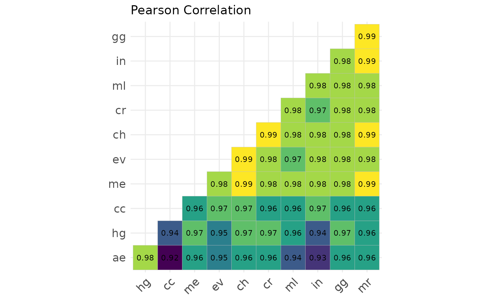
The function dist_gcms is very similar to the previous
cor_gcms, but now for distances. This function has the same
output: a list with two slots. One is the distance matrix obtained
(distances), while the second is the plotted matrix
(heatmap). Here the differences between GCMs are way more
clear than in the previous plot. As in was it the previous function,
methods can also be changed for a number of different distances. For a
complete list of available methods see ?dist_gcms. To build
a distance matrix considering multiple variables to each GCM we use a
flattening strategy, where values are concatenated in one unique vector
to each GCM. In the process, we need to scale variables so they end up
with the same measure. This matrix is also used to calculate the
clusters in the compare_gcms function and in further
presented kmeans_gcms function.
# Euclidean Distance between GCMs
s_dist <- dist_gcms(s, var_names, study_area, method = "euclidean")
s_dist
#> $distances
#> ae cc ch cr ev gg hg
#> cc 12.098570
#> ch 8.969913 7.552224
#> cr 8.514195 8.163410 4.086509
#> ev 9.754736 7.253076 4.989154 5.755512
#> gg 8.111254 9.078551 5.713758 5.705027 6.511863
#> hg 5.589097 10.904037 7.580155 7.217513 9.222617 8.074113
#> in 11.336510 7.728264 5.306804 7.057019 6.010795 6.224649 10.381061
#> me 9.123887 8.189250 4.604741 5.604862 6.179877 6.365865 8.078647
#> ml 10.160126 8.502065 6.040417 6.187604 7.007226 5.508376 8.708759
#> mr 8.788592 8.784732 4.298812 5.906397 5.869130 5.112497 8.145027
#> in me ml
#> cc
#> ch
#> cr
#> ev
#> gg
#> hg
#> in
#> me 5.774464
#> ml 6.445012 6.018782
#> mr 5.131127 4.670026 5.373297
#>
#> $heatmap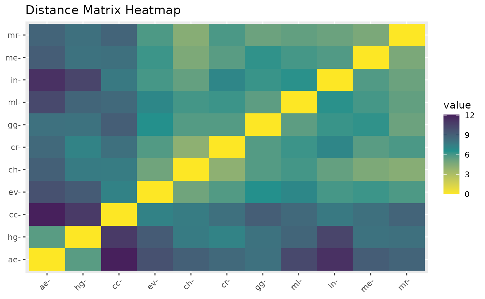
Obtain Clusters
Clusters in chooseGCM are obtained through K-means, a unsupervised
machine learning algorithm. K in this case is the number of GCMs the
modeler wants to use in projections. As in the previous
dist_gcms function, we can address different methods to
obtain the distance matrix by changing the method argument.
The K-means algorithm uses the distance matrix to obtain clusters, thus
a deep analysis of distances using dist_gcms function could
prove to be useful. As in compare_gcms function, this
function returns the K-means plot and a set of suggested GCMs, i.e. the
GCMs closer to the centroid of each clusters.
kmeans_gcms(s, var_names, study_area, k = 3, method = "euclidean")
#> $suggested_gcms
#> 1 2 3
#> "ae" "cc" "ch"
#>
#> $kmeans_plot
Alternatively, instead of using distances, one could run the analysis with raw environmental data by not setting any value to method (note how axis change). As in the previous case, the function also returns GCMs that are closer to the centroids. Note however that the plot below has a cluster with two GCMs, thus both have the same distance from the centroid. In this case, the function randomly suggests one of them. To perform this analysis without a distance matrix, we use only the mean values of each variable selected. In this way, the variability within variables is not considered, as in the above solution. But we recognize that for some purpose it could be useful to have a plot with raw variables as axis as provided here.
kmeans_gcms(s, var_names, study_area, k = 3)
#> $suggested_gcms
#> [1] "in" "ch" "ev"
#>
#> $kmeans_plot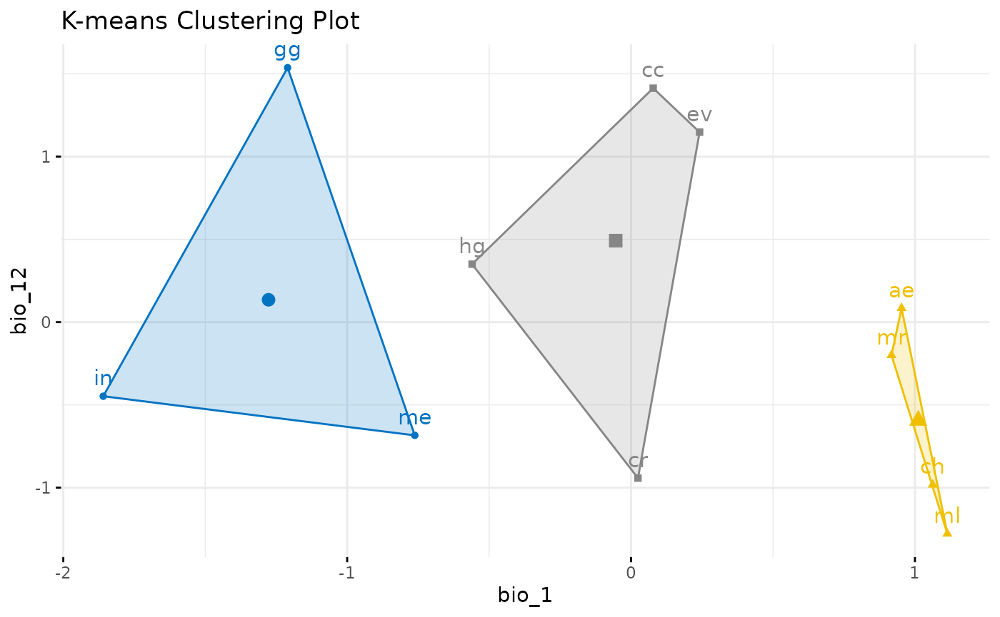
We can also obtain clusters through hierarchical clustering. In this case, however, the function doesn’t suggest any GCM. It is up to the user to define which GCMs are most suitable in this case. Hierarchical clustering is useful to visually inform the relationship between groups and could also be used to choose a number of clusters to build (together with metrics in the next section).
hclust_gcms(s, var_names, study_area, k = 3)
#> $suggested_gcms
#> [1] "hg" "cc" "cr"
#>
#> $dend_plot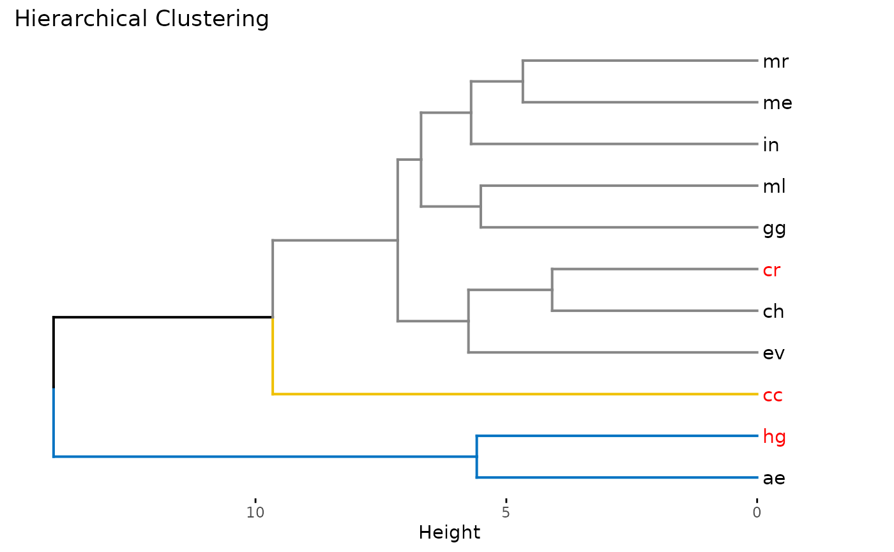
In this function we also provide a n argument to inform
the amount of data to be used in the clustering. This proved valuable
when using high resolution data.
hclust_gcms(s, var_names, study_area, k = 3, n = 1000)
#> $suggested_gcms
#> [1] "hg" "cc" "cr"
#>
#> $dend_plotNumber of Clusters
But how many clusters are good? There is three metrics implemented to
understand that. All of them are a way to see the minimum amount of GCMs
that are needed to encompass the variability in the whole set of GCMs.
The three methods are implemented in the same function by adjusting the
method argument. Within-cluster sum of squares (wss)
calculates the internal variability within clusters. Our goal here is to
search for the minimum amount of clusters that has the minimum amount of
variability. This is shown in the graph were the line changes abruptly
its direction (Number of clusters k = 3). As in the previous function,
this function provides a n argument to inform the amount of
data to be used in the clustering. Finally, one can also indicate the
method to build clusters with the argument clusters.
Available methods are ‘kmeans’ (standard) and ‘hclust’.
optk_gcms(s, var_names, study_area, cluster = "kmeans", method = "wss", n = 1000)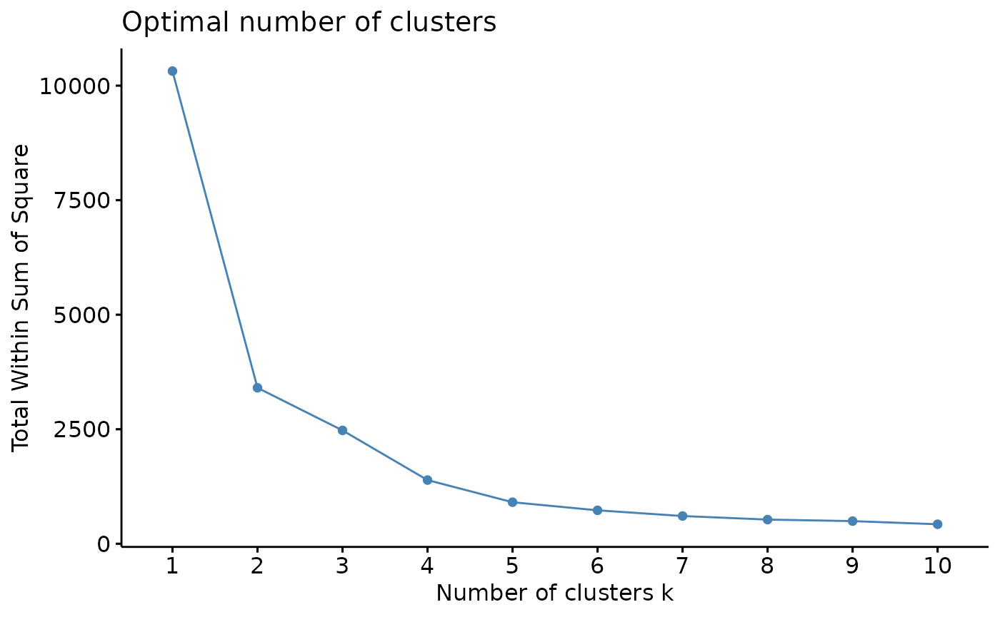
The Average Silhouette Width method, measures the mean distance from all individuals to the centroid of their own clusters, while comparing to other clusters. This is sometimes also referred as a metric of cluster quality (the higher the better). A number of clusters is the best when the distance from individuals within the cluster to its centroid is lower than the distance from individuals to other clusters centroid (maximizing the average silhouette width). In this method, the best number of clusters is marked with a dashed line (2 clusters).
optk_gcms(s, var_names, study_area, cluster = "kmeans", method = "silhouette", n = 1000)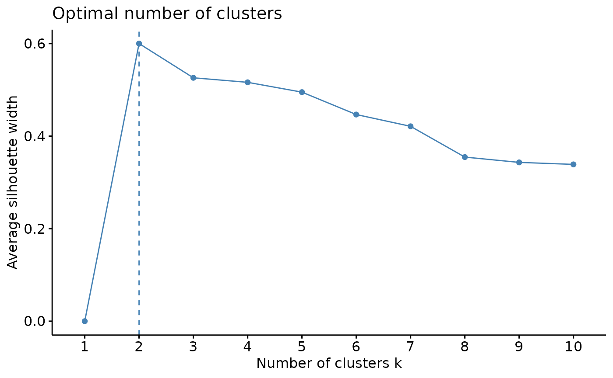
Our last method is the Gap Statistics. As in the previous method,
here the optimum number of clusters is showed with a dashed line (1
cluster). This method compares the variation within clusters with a set
of null clusters build through Monte Carlo (“bootstrap”) sampling.
Because of that, the gap statistics can take a longer time to run when
compared to previous methods described here. Moreover, some parameters
can be changed to improve the Monte Carlo process, such as:
nstart, K.max and B, where
nstart is the initial number of arrangements to be
compared, K.max is the maximum number of clusters to be
created and B is the number of bootstrap permutations.
optk_gcms(s, var_names, study_area, cluster = "kmeans", method = "gap_stat", n = 1000)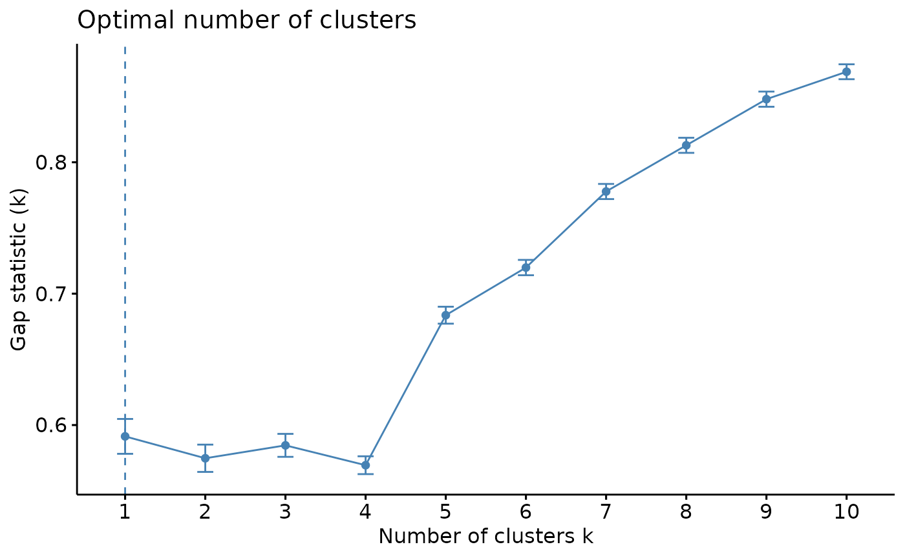
Monte Carlo permutations
An alternative way to analyse if the mean distance between GCMs is
similar to the mean distance between all GCMs is to use the
montecarlo_gcms function. This function will build a
distance matrix (using method argument) and plot the mean
distance between all GCMs as a blue line. Afterwards, it will run a
Monte Carlo permutation to randomly choose a group size ranging from [2]
and [total number of GCMs - 1] and randomly choose a subset of GCMs with
that group size. The mean distance between the random set is obtained
and ploted in a violin plot. Finally, the function accesses the mean
distance between selected GCMs using the kmeans function in all possible
values of k and plots it in red.
montecarlo_gcms(s, var_names, study_area, perm = 10000, dist_method = "euclidean", clustering_method = "kmeans")
#> $montecarlo_plot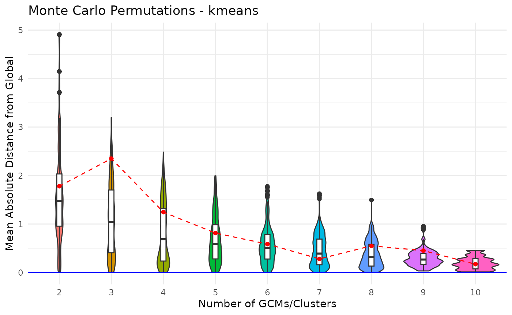
#>
#> $suggested_gcms
#> $suggested_gcms$k2
#> 1 2
#> "ae" "ch"
#>
#> $suggested_gcms$k3
#> 1 2 3
#> "ae" "cc" "ch"
#>
#> $suggested_gcms$k4
#> 1 2 3 4
#> "ch" "ae" "ev" "cc"
#>
#> $suggested_gcms$k5
#> 1 2 3 4 5
#> "ev" "gg" "ch" "ae" "cc"
#>
#> $suggested_gcms$k6
#> 1 2 3 4 5 6
#> "ev" "ae" "in" "gg" "ch" "cc"
#>
#> $suggested_gcms$k7
#> 1 2 3 4 5 6 7
#> "ev" "gg" "cc" "in" "ch" "me" "ae"
#>
#> $suggested_gcms$k8
#> 1 2 3 4 5 6 7 8
#> "ae" "me" "cc" "hg" "ev" "in" "ch" "gg"
#>
#> $suggested_gcms$k9
#> 1 2 3 4 5 6 7 8 9
#> "in" "ae" "gg" "ev" "cc" "ch" "me" "ml" "hg"
#>
#> $suggested_gcms$k10
#> 1 2 3 4 5 6 7 8 9 10
#> "in" "ae" "mr" "gg" "ml" "ch" "me" "ev" "hg" "cc"An alternative is to use the montecarlo_gcms function
with the clustering_method argument set to
closestdist. This method will use a greedy algorithm to
select the GCMs that are closer to the global mean distance. The
algorithm stops when adding a new GCM does not return a mean distance
closer to the global mean or when the distance reaches a minimum value
(standard = 0.0000001).
montecarlo_gcms(s, var_names, study_area, perm = 10000, dist_method = "euclidean", clustering_method = "closestdist")
#> $montecarlo_plot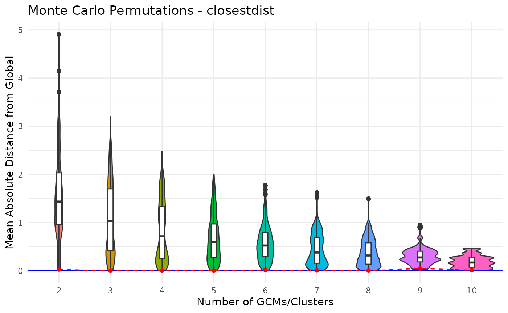
#>
#> $suggested_gcms
#> $suggested_gcms$k2
#> [1] "cr" "hg"
#>
#> $suggested_gcms$k3
#> [1] "ae" "ch" "cr"
#>
#> $suggested_gcms$k4
#> [1] "cc" "ev" "me" "ml"
#>
#> $suggested_gcms$k5
#> [1] "ae" "me" "mr" "cr" "in"
#>
#> $suggested_gcms$k6
#> [1] "ae" "ch" "cr" "ml" "ev" "in"
#>
#> $suggested_gcms$k7
#> [1] "ch" "mr" "ae" "hg" "ev" "gg" "in"
#>
#> $suggested_gcms$k8
#> [1] "cc" "ev" "me" "ml" "gg" "in" "hg" "mr"
#>
#> $suggested_gcms$k9
#> [1] "ae" "cc" "hg" "cr" "ch" "me" "mr" "gg" "ev"
#>
#> $suggested_gcms$k10
#> [1] "ae" "cc" "hg" "cr" "ch" "me" "mr" "gg" "ev" "ml"The plot shows the mean distance between all GCMs as a blue line, the
mean distance between selected GCMs using the Closestdist algorithm in
all possible values of k as a red line and the mean
distance between random GCMs as a violin plot.
The environment covered by GCMs selection
We also included in this package a function called
env_gcms, which is able to project GCMs in the
environmental space. With that, researchers are able to see the coverage
of GCMs when comparing to all GCMs. It is also possible to see the
density of GCMs using the highlight=sum as argument.
env_gcms(s, var_names, study_area, highlight = res$suggested_gcms$k3)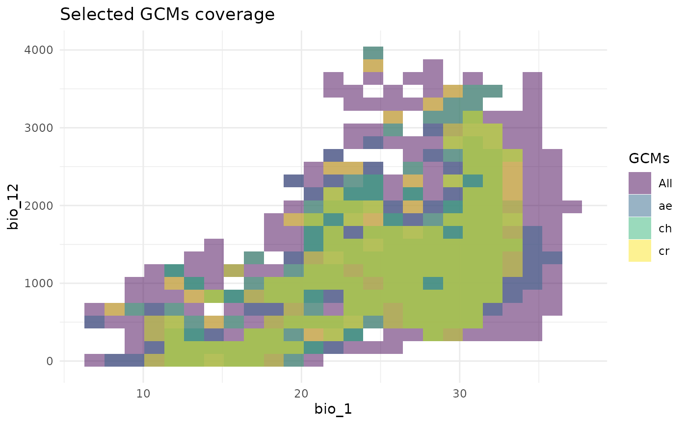
env_gcms(s, var_names, study_area, highlight = "sum")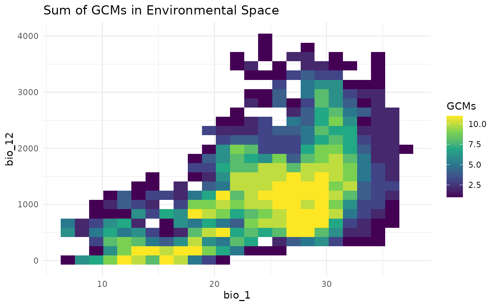
A greedy algorithm for GCMs selection
As a way to optimize GCMs selection, we implemented a greedy algorithm, which calculates the distance matrix between all GCMs and calculates the mean distance in the matrix (global mean distance). The algorithm selects a random pair of GCMs and test if adding any other GCM to that pair will drive the mean distance closer to the global mean. The algorithm stops when adding a new GCM does not return a mean distance closer to the global mean or when the distance reaches a minimum value (standard = 0.0000001).
closestdist_gcms(s, var_names, study_area)
#> $suggested_gcms
#> [1] "ae" "ch" "cr"
#>
#> $best_mean_diff
#> [1] 0.0001577513
#>
#> $global_mean
#> [1] 7.190363We can also provide the value of k we want to use:
closestdist_gcms(s, var_names, study_area, k=3)
#> $suggested_gcms
#> [1] "ae" "ch" "cr"
#>
#> $best_mean_diff
#> [1] 0.0001577513
#>
#> $global_mean
#> [1] 7.190363Wrapping Up
From our analysis, we can infer that something between two and three clusters is enough to inform regarding the environmental variation from given GCMs. In this way, if we use GCMs ACCESS-ESM1-5 (ae), CNRM-CM6-1-HR (ch) and CNRM-ESM2-1 (cr) to project our models into future scenarios we would be able to inform a decent variation in our projections.
tictoc::toc()
#> 35.735 sec elapsed